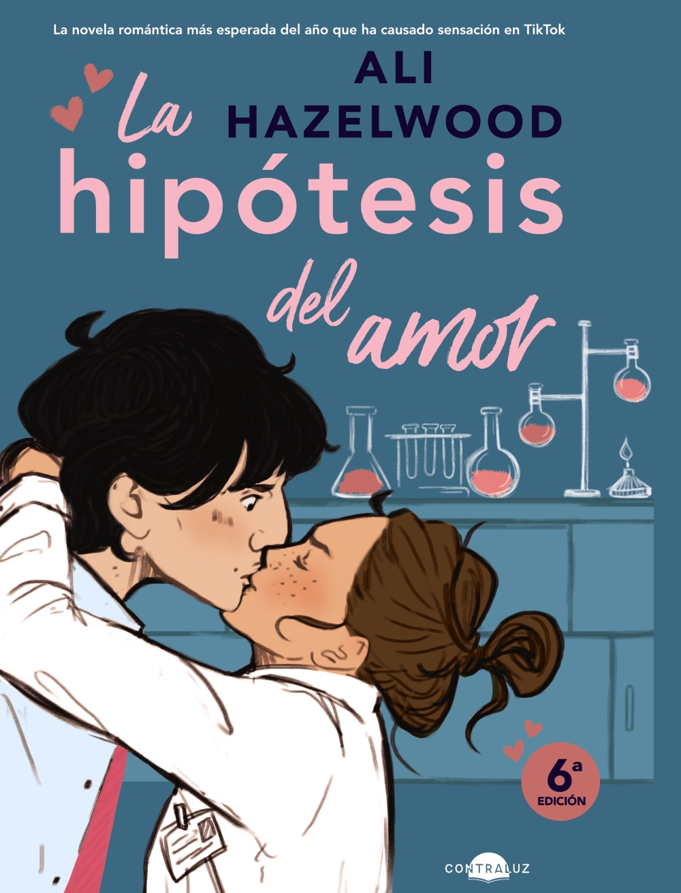

La Hipotesis del Amor - Ali Hazelwood
1. La Hipotesis del Amor

Sipnosis
Como candidata al doctorado de tercer año, Olive Smith no cree en las relaciones románticas duraderas, pero su mejor amiga sí, y eso es lo que la metió en esta situación. Convencer a Anh de que Olive está saliendo y que va camino de a tener sus felices por siempre, pero iba a requerir algo más que simples trucos mentales Jedi: los científicos requieren pruebas. Entonces, como cualquier biólogo que se precie, Olive entra en pánico y besa al primer hombre que ve.
Ese hombre no es otro que Adam Carlsen, un joven profesor de renombre y un imbécil muy conocido. Es por eso que Olive se queda anonadada cuando el tirano de laboratorio reinante de Stanford acepta mantener su farsa en secreto y ser su novio falso. Pero cuando una gran conferencia científica se sale de control, poniendo la carrera de Olive en el mechero Bunsen, Adam la sorprende de nuevo con su apoyo inquebrantable y aún más inquebrantable... abdominales de seis paquetes.
De repente, su pequeño experimento se siente peligrosamente cerca de la combustión. Y Olive descubre que lo único más complicado que una hipótesis sobre el amor es poner su propio corazón bajo el microscopio.
Reseña
La Hipótesis del Amor es una novela romántica que le ha dado vuelta a todo Internet y que me sorprendió bastante. Con lo cliché que puede sonar desde su sinopsis, entre sus páginas esconde una historia tan bonita, que hasta el más frío de corazón puede ser conmovido.
La protagonista es Olive, ella perdió a su madre durante la adolescencia a causa de un cáncer de páncreas, y eso le hizo querer estudiar biología para luego hacer el doctorado y dedicarse a la investigación. El libro nos sitúa cuando comienza el doctorado y se topa con un tipo algo desagradable, que básicamente es el prólogo, y luego nos sitúa tres años después que es cuando está cursando el tercer año.
Olive comparte piso con sus amigos Ahn y Malcom, que son geniales. Ella no cree en las relaciones de amor, y a pesar de haber salido con chicos, no se siente llena. La última relación que tuvo fue con un compañero de doctorado, Jeremy, por el que su amiga Ahn se siente muy atraída, pero no se atreve a salir con él por miedo a hacerle daño a Olive, así que a ésta se le ocurre besar a otro chico para que Ahn la vea y así la crea de verdad, de que ya no siente nada por Jeremy.
El problema está en que el hombre al que besa es Adam Carlsen, un profesor que brilla por el mal carácter que tiene con sus alumnos, con los que es muy crítico y les hace sentir mal. Ella le propone a él que pacten un noviazgo falso para que su amiga le crea, y él acepta, y cuando ella se entera de quién es él alucina, pero resulta que a él también le interesa mantener esa falsa relación, ya que está a la espera de que le concedan unasubvención y piensa que no se la van a dar porque no ha echado raíces, y qué mejor que tener a una novia. Así que,trazan entre los dos ese plan, en el que todos los miércoles irán a una concurrida cafetería para que los vean juntos. El problema viene, cuando Olive se da cuenta de que empieza a sentirse bastante atraída por él, aunque lo disimule muy bien.
Mientras tanto, Olive está muy centrada en su proyecto de detección del cáncer de páncreas desde el estadio I, y un profesor de otra universidad, Tom, le escribe interesado por su proyecto, cosa que le hace feliz, solo que nunca es oro todo lo que reluce, y pasarán varias cosas con las que os quedaréis con la boca abierta, solo que no os puedo contar nada, simplemente os quería situar en la trama y ahora sí que vamos al análisis.
La narración de la autora es muy ágil, dinámica y dicharachera. Os vais a reír mucho con este libro y con algunas situaciones que se presentan. Es una novela romántica con mucho humor, pero también con una parte seria.